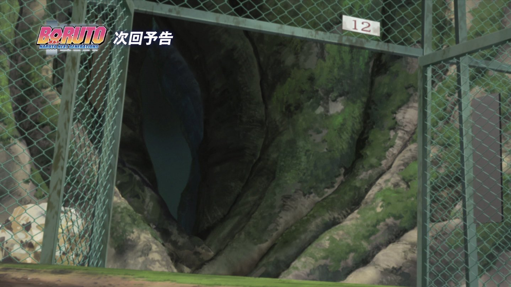
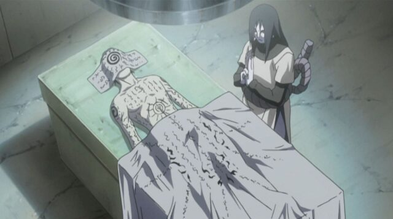

Aoi Akuma
La maladie mentale
Qui est Aoi Akuma
Aoi a grandi en ayant peu de connaissances sur le monde des shinobis. Il était très solitaire et passait son temps dans la forêt interdite, observant de loin les aînés de son clan s'entraîner. Cependant, sa faiblesse physique l'empêchait de progresser aussi rapidement que ceux qu'il admirait. Un jour, un inconnu masqué fit irruption et le força à boire un mystérieux liquide. Dès lors, Aoi se sentit incroyablement plus fort, sa faiblesse disparut presque instantanément.

"L'art n'est pas beau par son apparence, le véritable art est beau de sens, ainsi reconnaît-on un artiste."
-Aoi Akuma

Mais cette transformation eut des effets imprévus : parfois, en plein milieu de la forêt, il perdait le contrôle de lui-même, criant à pleins poumons avant de s’effondrer, inconscient. Malgré cela, il poursuivit ses entraînements avec une détermination froide et implacable. À son entrée à l’académie, un changement radical s’opéra. L’enfant distant et dénué de sentiments qu'il était auparavant laissa place à quelqu’un de joyeux et bienveillant. La question est de savoir à quel moment sa véritable personnalité refera-t-elle surface ? Il rencontra un ami avec qui il partit en voyage. Lors de ce voyage au Pays de la Pluie, Aoi et son ami décidèrent de s'aventurer dans un hameau. Ces derniers aperçurent à l'intérieur un enfant accompagné d'un homme se trouvant à 60 mètres d'eux. Décidés à s'aventurer de plus en plus loin, Aoi et son ami furent interrompus par trois ninjas se déplaçant proche d'eux en saut de chakra. La chance tournant de leur côté, ils ne furent pas repérés par ces ninjas et décidèrent d'observer les ninjas non loin d'eux. En les observant, ils distinguèrent au loin les ninjas s'approcher de l'homme accompagné d'un enfant et déclencher un conflit qui éclata entre eux. Son ami s'aperçut que l'un des ninjas effectuait un mouvement étrange en sortant quelque chose de sa poche et alerta immédiatement Aoi, qui, de nature très serviable, souhaita intervenir afin de porter main forte à l'homme. Mais finalement, il écouta son ami et n'aida pas l'homme en danger, se concentrant à nouveau sur la scène, voyant l'homme tomber raide au sol. Les ninjas s'empressèrent de piller l'entièreté du hameau tout en tuant tous les villageois tentant de résister. Suite à cette tragédie, ils décidèrent de camper non loin du lieu dans le but d'informer le père de Aoi de la situation. La nuit suivante, Aoi se sentit extrêmement impuissant, tandis que son ami, triste, tenta de garder un sourire.

"Ce qu'on risque révèle ce qu'on vaut."
- Aoi Akuma


À leur retour à Kusa, Aoi et son ami décidèrent bien que mal d'oublier cette scène tragique. Vers ces 8 ans, tous les deux, décidèrent de commencer un entraînement intensif à la maîtrise de leur chakra sous la tutelle du père de Aoi. Malgré beaucoup d'échecs après 9 mois d'efforts acharnés, le père de Aoi découvrait les progrès de ces derniers trouvant même une aisance dans la maîtrise du ninjutsu de l’eau "Suiton", une faculté est innée chez lui:
Deux ans plus tard, le jour de l'examen arriva déterminant s'ils sont prêts à quitter l'académie. La veille de celui-ci, Aoi sembla stressée par la situation, mais il laissa son ego de côté et demanda conseil à ses amis pour ses révisions. Tous ensemble, ils passèrent la nuit à réviser jusqu'à épuisement. Le jour de l'examen bien qu'épuisé, ils se sentent prêts à se surpasser pour réussir cette épreuve, malheureusement par manque de concentration son ami mourra lors d'une épreuve l'opposant à d'autre shinobi de kiri, Aoi appris ça après avoir réussi avec brio cette épreuve, le brisant entièrement de l'intérieur et cherchant à le venger, il s'écartera de son village en se rapprochant de plus en plus de sa famille dans la forêt interdite afin de parvenir à ses fins, le poussant petit à petit vers la folie. (Sa maladie remontait)

"La parole entraîne, l'exemple enseigne."
- Aoi Akuma
"La famille Akuma"
Le clan Akuma est un clan exilé originaire de Kiri, il est aujourd'hui inconnu de tous, aux yeux des Shinobis ce clan n'existe littéralement pas. Ses ninjas sont définis tels des fantômes, ils vivent dans la forêt interdite, ils sont les maîtres de cette forêt. Chaque élément étrange se déroulant dans ce lieu est l'œuvre du clan Akuma, chaque disparition et autres événements sont dus à ce clan. Partout où se trouve un manoir abandonné "hanté" le clan Akuma s'y trouve. Le clan Akuma n’a pour l’instant eu aucune interaction avec n’importe quel Shinobi, du moins aucun d’entre eux ne sont revenus. La forêt interdite étant la seule maison de ce clan, ils la protègent coûte que coûte et ne laissent donc personne entrer dans celle-ci sans autorisation.
"Mes yeux sont une malédiction, ceux qui croiseront mon regard seront maudits"
-Aoi Akuma
.webp)
Objectifs (Court terme) :
Au cours de sa vie de Ninja, Aoi souhaite rendre fier son père en devenant un pilier de soutien pour la forêt. Pour cela, il souhaite intégrer les gardes ainsi que les scientifiques de la forêt pour rester fidèle au tradition du clan. Aoi veut aussi se faire de nouveaux amis en parlant à tout le monde, cherchant à tisser des liens et à élargir ses connaissances (pensant que sa folie ne remontra pas en ayant des proches). Il souhaite ainsi montrer que les Akuma sont des gens bien et normaux, dans l'optique de redorer l'image de son clan. Par la suite, il envisage de rejoindre le service de renseignement de Kusa, avec l'ambition d'un jour le diriger et de travailler en étroite collaboration avec les hauts-gradés du village pour protéger ces habitants de toute menace. En partageant son savoir et en travaillant en arrière-plan pour la sécurité de Kusa, il exprime son désir de défendre son village et de contribuer à sa prospérité et il est prêt pour cela à mettre sa vie en jeu.

Objectifs (Moyen terme) :
Aoi veut explorer les archives du village, pour faire revenir d'anciennes traditions du clan Akuma et restaurer son patrimoine culturel. Permettant d'effectuer d'anciens rituels et de réutiliser de vieilles techniques oubliées, ainsi que de reconstruire une bibliothèque Akuma pour préserver cette mémoire historique. Cet objectif pourrait l'amener à parcourir le monde pour retrouver des parchemins et des artefacts qu'on pensait perdus pour toujours. Lui permettant d'en apprendre plus sur le passé de son clan et de savoir pourquoi il fut écarter du village de Kusa et de comprendre réellement comment les choses se sont passés. Aoi aspire à devenir un maître du fuinjutsu pour protéger Kusa. Il voit dans cet art du scellement un moyen de renforcer les défenses du village en contrôlant le chakra des ennemis et en posant des barrières de protection avancées. Son objectif va au-delà de la simple maîtrise personnelle : il souhaite transmettre ces connaissances et former une nouvelle génération de spécialistes. En prenant des élèves sous son aile, Aoi veut partager les subtilités du fuinjutsu, en leur inculquant la rigueur et la précision nécessaires. Ces jeunes ninjas deviendront les gardiens de Kusa, équipés pour protéger le village avec des sceaux puissants.

Objectif (long terme) :
Aoi, brillant médecin et chercheur visionnaire, consacre sa vie à transformer Kusa en une puissance incontournable et un acteur majeur du commerce dans le monde ninja. Pour atteindre cet objectif ambitieux, il a établi un laboratoire clandestin dans les profondeurs de la Forêt Interdite, situé sous une prison renforcée par un système de défense complexe en Fuinjutsu. Ce laboratoire secret à la pointe de l’innovation est dédié à l’étude approfondie des capacités uniques de clans emblématiques tels que les Kaguya, les Uchiha, les Hoshigaki, les Chinoike, les Camélia ou encore les Satsu. Son ambition est de décoder, reproduire et même améliorer ces particularités biologiques pour les intégrer à l’armée militaire de Kusa. Par ailleurs, il prévoit de vendre ses découvertes, qu’il s’agisse d’armes biologiques, de techniques expérimentales ou de traitements avancés, sur le marché noir ou à d’autres villages, faisant de Kusa une plaque tournante technologique et économique. L’un des projets les plus ambitieux d’Aoi consiste à expérimenter sur des cellules afin de fusionner les traits distinctifs de plusieurs clans, créant ainsi des capacités hybrides uniques. Par exemple, il pourrait travailler à combiner la manipulation osseuse des Kaguya avec la capacité de survie aquatique des Hoshigaki, ou encore associer la manipulation sanguine des Chinoike à des techniques de genjutsu inspirées des Uchiha. Bien que risquées et moralement discutables, ces recherches visent à créer des soldats biologiquement supérieurs, transformant ainsi l’armée de Kusa en une force redoutable et révolutionnant le potentiel militaire du village.


» Suiton«

» Hyôton«

» Taijutsu «
Le Suiton 水遁, Aoi sera capable de créer des bulles d'eau dès son plus jeune âge. il voudra aussi devenir maître Suiton à l'avenir.
Le Hyôton est un Kekkei Genkai ce qui est la fusion du Suiton 水遁 et Futon 風遁, le Hyôton permet de manipuler la glace. Aoi maitrise ce Kekkei Genkai et l'utilise afin de déstabiliser ses adversaires
Le Taijutsu (体術, signifiant littéralement : Techniques du corps) est l'une des trois branches de l'art du combat ninja avec le Ninjutsu et le Genjutsu. Assimilable aux arts martiaux réels, il comprend le combat à mains nues et le maniement des armes.
» Taille:
Aoi fait 1m54
» Poids:
Aoi fait 50kg
» Corpulence:
Aoi possède une musculature standard
» Cheveux:
La couleur de cheveux de Aoi est noir
» Caractères:
Aoi est une personne appréciant la vie globalement. Son but est de partager sa joie de vivre bien qu'il soit très méfiant des autres personnes. Aoi n'a de confiance personne même ses proches. Malgré la folie qui l'atteint.
Qualités Aoi
- Joyeux
- Prêt à partager
- Enthousiaste
- Intelligent
- Fidèle

défauts Aoi
- Condescendant
- Bipolaire
- Froid (dans sa folie)
- Méfiant
- Anxieux
- Impitoyable (dans sa folie)